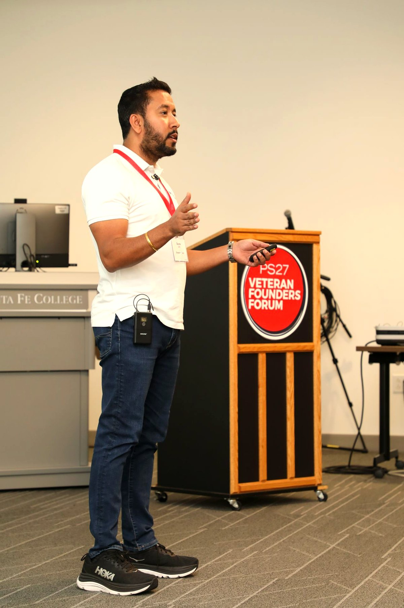

Service Is the Through-Line
Emerging Tech was built on a simple conviction: the agencies that defend and serve this nation deserve partners who bring the same discipline to delivery that the mission demands.
Drawing from a background in the United States Air Force our leadership operates with a focus on accountability, operational discipline, and outcomes, always centered on those we ultimately serve: warfighters, veterans, clinicians, and the public.
Since 2015, that conviction has grown into a team of more than 85 professionals across 24 states, cleared, credentialed, and united by a purpose-driven culture. We innovate through our Centers of Excellence, we collaborate without corporate politics, and we deliver to the standard our clients' missions require.
Thank you for considering Emerging Tech as a partner in your mission. We look forward to earning your trust.
Leadership principles
- Accountability, own the outcome, not the excuse
- Operational discipline, standards-driven delivery
- Outcomes, measured by mission impact
85+ professionals · 24 states · SDVOSB · 8(a) · HUBZone · MBE · CMMI Level 3 · CMMC Level 1 · ISO 9001 · ISO 20000-1 · ISO 27001 · est. 2015, Alachua FL.
About Emerging Tech →Executive Team

Gaurav Seth
Founder & CEOGaurav Seth, “Seth”, is the Founder and CEO of Emerging Tech. He started his career with the United States Air Force, where he integrated classified systems deployed in conflict zones including Afghanistan and Iraq. He integrated, secured, deployed, and managed National Security Systems (NSS) across federal governments’ critical infrastructure.
After leaving the USAF, he provided cybersecurity engineering services to multiple federal agencies: the Department of Veterans Affairs, Federal Bureau of Investigation, Department of Defense, White House Communications Agency, Defense Information Systems Agency, Defense Intelligence Agency, and the National Security Agency.
Seth established Emerging Tech in 2015. His vision led to the creation of ET’s on-demand service model for System to System (SoS) consultant services, designed to assist agencies with increased productivity, more accurate and trustworthy data, faster decision making, and lower costs. As a Trusted Integrator, we are committed to engineering compliant, secure, and cost-efficient information technology solutions that exceed our customers’ expectations.

Brian Lang
PresidentBrian Lang is the President of Emerging Tech, where he oversees day-to-day operations and drives corporate strategy aimed at sustainable growth. He is committed to strengthening partnerships and enhancing client relationships, ensuring that the company’s offerings align with evolving market needs.
With extensive professional experience in the federal and commercial consulting sectors, Brian brings a blend of operational expertise, strategic foresight, and a client-centric approach. His leadership style emphasizes collaboration, innovation, and measurable results, positioning Emerging Tech as a trusted and competitive player in its industry.
He has worked at Booz Allen Hamilton, ManTech, and Navigant Consulting. He has supported federal clients like the Department of Veterans Affairs, Department of Commerce and Department of Energy and in the private sector for companies like HSBC and ING. In addition to his consulting experience, Brian has extensive global financial services experience. Brian holds an MBA from Erasmus University Rotterdam School of Management and a BBA in International Business from The George Washington University.

Hee Ahn
Chief Growth OfficerHee Ahn serves as Chief Growth Officer at Emerging Tech, where he leads corporate growth strategy, business development, strategic partnerships, and federal market expansion.
He brings more than 25 years of experience in technology consulting, program management, and organizational growth, with deep expertise in health IT, digital modernization, cybersecurity, cloud, and technology strategy and transformation. Throughout his career, Hee has helped organizations pursue and deliver complex programs supporting federal civilian and health agencies.

Preety Seth
Chief Administrative OfficerPreety Seth is Chief Administrative Officer of Emerging Tech, LLC, overseeing the company’s administrative, financial, human resources, and compliance operations.
With a background in science and an Agile certification, she brings an analytical, people-focused approach to building efficient, well-organized teams. Known for being detail-oriented and approachable, Preety is committed to fostering a positive and productive work environment.
Led by Someone Who Served
Emerging Tech is a Service-Disabled Veteran-Owned Small Business, and that is not a certification we picked up along the way. It is where the company started, and it shapes who we hire and how we work with the agencies that serve veterans.

Want to Talk Directly with Our Leadership?
Reach out, we’d welcome the conversation.